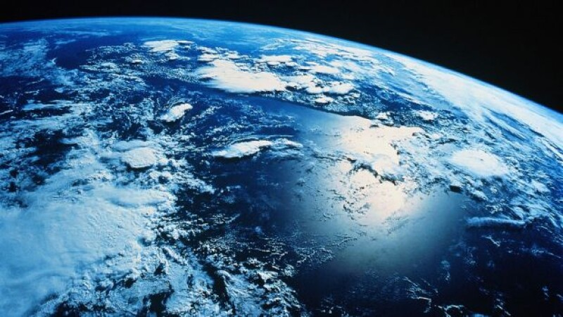

Terra
INFORMAȚII DESPRE PLANETA TERRA
Planeta noastră natală, Pământul sau Terra,
este a treia planetă de la soare. Este singura
planetă cunoscută cu oxigen liber în
atmosferă, mări de apă la suprafață și,
desigur, viață.
Planeta Pământ este a cincea ca mărime din
sistemul solar. Este mai mică decât cei patru
uriași gazoși –> Jupiter, Saturn, Uranus și
Neptun, dar mai mare decât Mercur, Marte
şi Venus, celelalte trei planete stâncoase.
Deși până acum s-a considerat că Venus
este cea mai aproapiată planetă de Pământ,
s-a dovedit recent că Mercur este vecina cea
mai aproapiată de planeta noastră.
CÂND S-A FORMAT PAMÂNTUL?
Oamenii de știinţă cred că Pământul s-a
format în același timp cu soarele și alte
planete, în urmă cu aproximativ 4,6 miliarde
de ani, când sistemul solar s-a format dintr-
un nor masiv, rotativ de gaz și praf cunoscut
sub numele de nebuloasă solară.
De unde ştim asta? Pentru a afla vârsta
Pământului, oamenii de știință se uită la roci
și sedimente și încearcă să determine vârsta
acelei bucăți de sediment.
STRUCTURA PAMÂNTULUI
Pământul are un diametru de aproximativ
13.000 de kilometri și este rotund, deoarece
gravitaţia atrage materia într-o minge.
Miezul pământului are o lățime de
aproximativ 7100 km şi creează câmpul
magnetic al pământului.
Deasupra miezului
se află mantaua Pământului, care are o
grosime de aproximativ 2900 km. Mantaua
nu este complet rigidă ci pluteşte lent.
Pământul are două tipuri de crustă
deasupra mantalei. Terenul uscat al
continentelor este alcătuit în mare parte din
granit şi alte minerale ușoare de silicat, în
timp ce fundul oceanului este alcătuit în
mare parte din bazalt, o rocă vulcanică
întunecată și densă.
CURIOZITĂȚI DESPRE PLANETA TERRA
- Un an pe Pământ nu are exact 365 de zile. Sunt de fapt 365,2564 zile. Aceste ,2525 de zile suplimentare creează necesitatea unui An bisect o dată la patru ani. De aceea adăugăm o zi suplimentară în Februarie la fiecare patru ani - 2004, 2008, 2012 etc.
- Cel mai lung lanţ muntos din lume este de fapt subacvatic.
- Pământul a fost mov. Potrivit acestui articol din Live Science, microbii antici ar fi putut folosi o altă moleculă decât clorofila pentru a valorifica razele soarelui, una care le conferea organismelor o nuanţă violetă.
- Pământul se reciclează. Știați că Pământul este singura planetă din sistemul nostru solar care are plăci tectonice? Crusta exterioară a Pământului are mai multe regiuni numite plăci tectonice. Sub acestea se află un interior de magmă care determină mișcarea plăcilor, ciocnindu-se uneori una pe alta. Pe măsură ce se ciocnesc și se despart, magma creează crusta proaspătă.